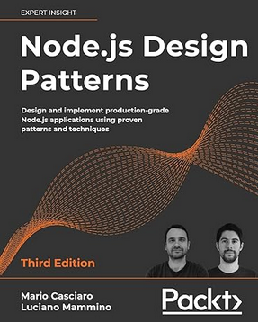
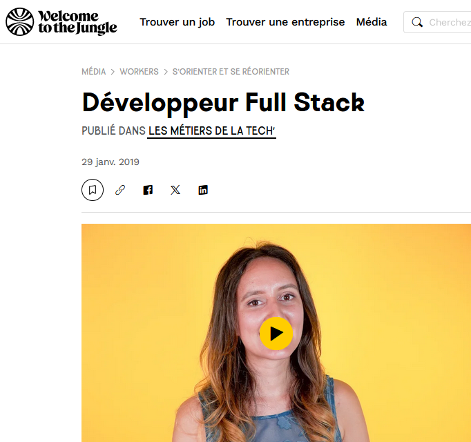
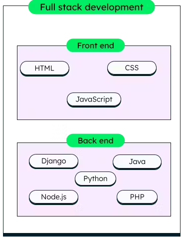
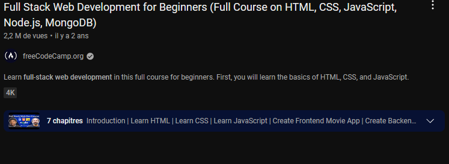

Developpeur full stack

Lors de mes études, je me suis interessé au métier de developpeur full stack, qui est un rôle essentiel dans le developpement d'applications.
Ce site contient quelques ressources étudiant le sujet : un livre, un article de revue, 2 autres sites ainsi qu'une vidéo.
Les problématiques seront : Qu'est-ce qu'un developpeur full stack ? Quelles sont ses missions ? Comment le devenir ?
Les mots clés utilisés sont : "developpeur", "full stack", "metier", "front end", "back end".

Mario Casciaro, Luciano Mammino, "Node.js Design Patterns: Design and implement production-grade Node.js applications using proven patterns and techniques", Packt, 2020, ISBN 1839214112
La requête : "Book on full stack developpement" sur google puis j'ai regardé les résultats en fonction de la date et des avis.
Motif : J'ai choisis ce livre car il a de bons retours et n'est pas trop ancien, ce qui est un problème réccurent avec ce genre d'ouvrage

Narjiss, Développeur Full Stack, welcome to the jungle, https://www.welcometothejungle.com/fr/articles/developpeur-full-stack-1, 2019
La requête : "article developpeur full stack" sur google, suivit d'un choix de l'article selon son contenu
Motif : J'ai trouvé le contenu de l'article intéressant.

mongodb, Full Stack Development Explained, Lien : https://www.mongodb.com/resources/basics/full-stack-development
La requête : "information on full stack developer"
Motif : mongodb est un outil connu dans le developpement web, c'est pourquoi j'ai choisis ce site.
tealhq, What Tools do Full Stack Developers Use?, Lien : https://www.tealhq.com/software/full-stack-developer
La requête : "full stack developer tools"
Motif : J'ai trouvé ce site bien présenté et concis

freeCodeCamp.org, "Full Stack Web Development for Beginners (Full Course on HTML, CSS, JavaScript, Node.js, MongoDB)", provient de youtube à l'adresse : https://youtu.be/nu_pCVPKzTk
La requête : "recommended videos on full stack developpement" sur google, puis j'ai filtré la liste selon la date de sortie et les avis.